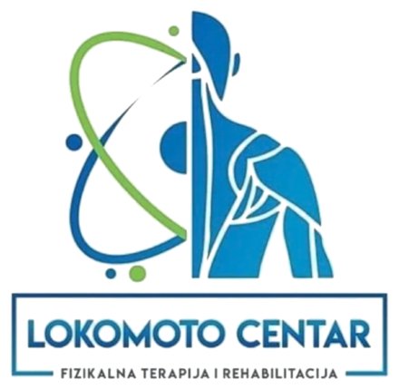
Dvodnevna edukacija o proceni i rehabilitaciji bola u donjem delu leđa. Ne dobijaš listu vežbi za dijagnozu, nego sistem odlučivanja koji primenjuješ pred pacijentom kog nikada nisi video.
Fizioterapeut sa preko petnaest godina prakse i osnivač Lokomoto Centra u Beogradu. Sistem koji predaje nije nastao na kursu - nego iz potrebe da ceo tim radi na isti način, sa istim kriterijumima, bez obzira ko preuzme pacijenta.
Anatomiju su svi učili. Tehnike se nauče za vikend. Ono što nedostaje je put - od trenutka kada pacijent uđe, do trenutka kada ga otpustiš.
Tri faze. Znaš tačno šta pacijent mora da može pre prelaza - i šta da radiš ako ne može. Klikni na prelaz.
Kriterijumi i vremena zadržavanja su klinički standard ove metodologije koji omogućava uporedivost između pacijenata, a ne validirane norme iz literature.
Isti kriterijumi, isti redosled, bez obzira ko od terapeuta preuzme pacijenta. Zato se sistem i može predati dalje.
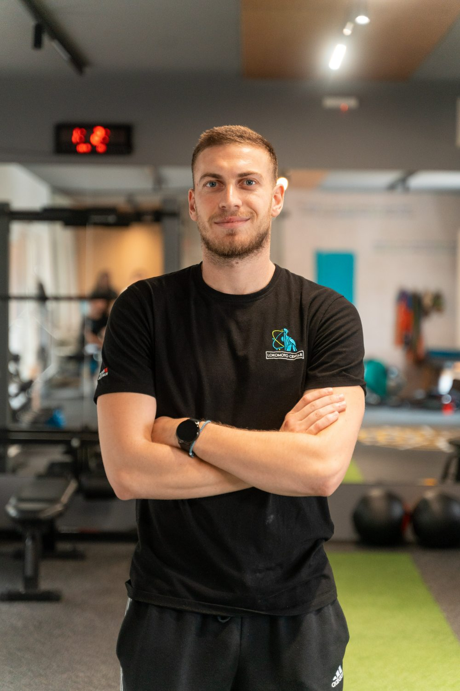
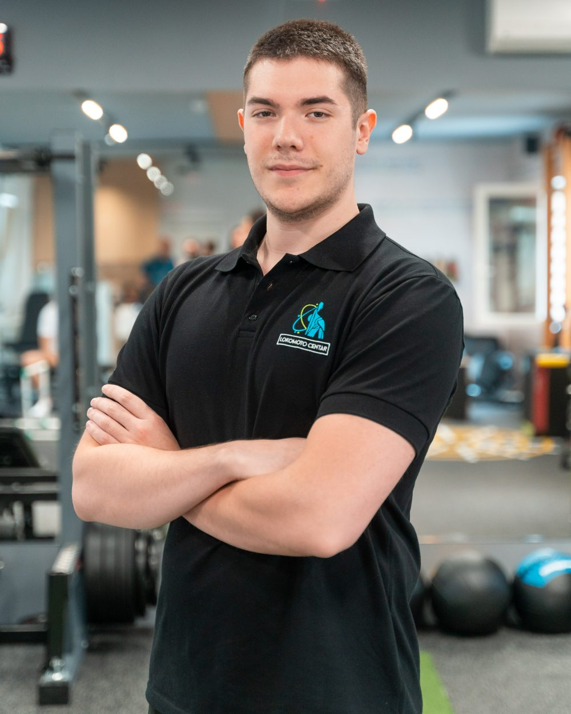
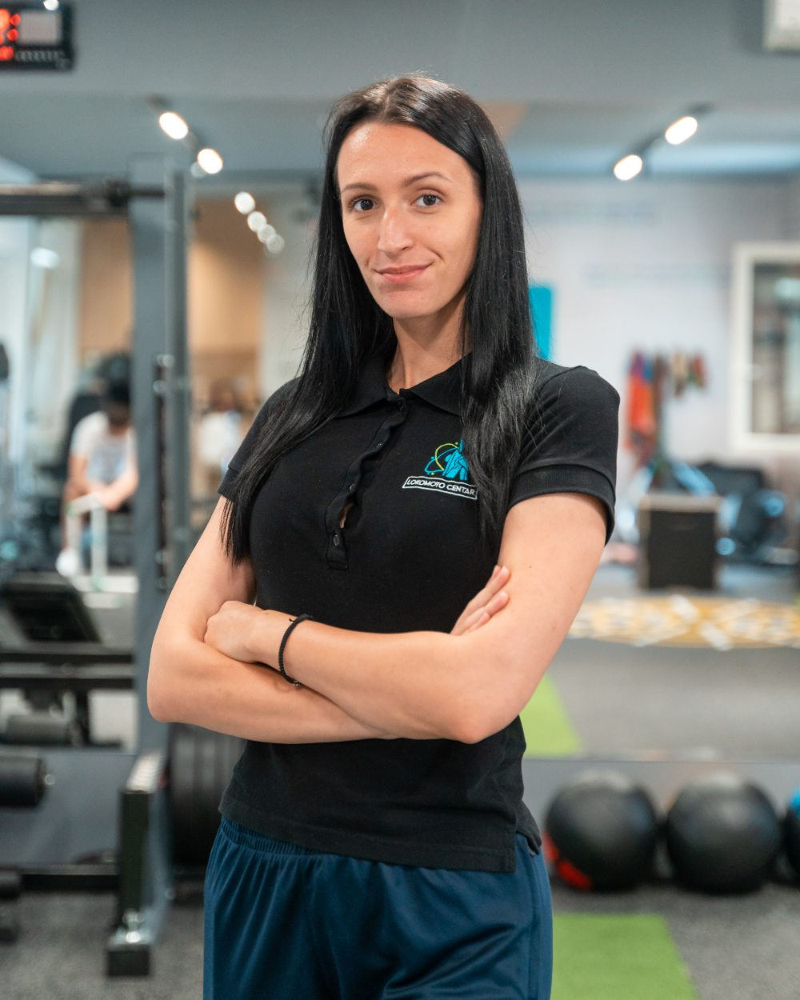
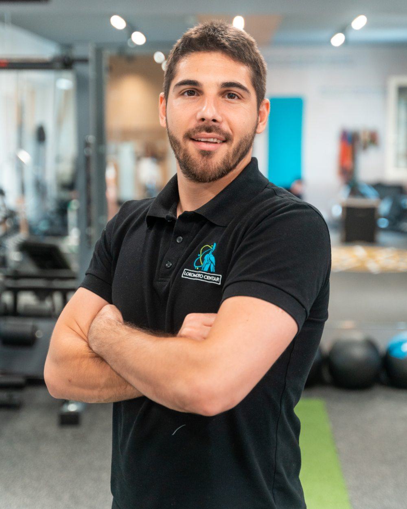
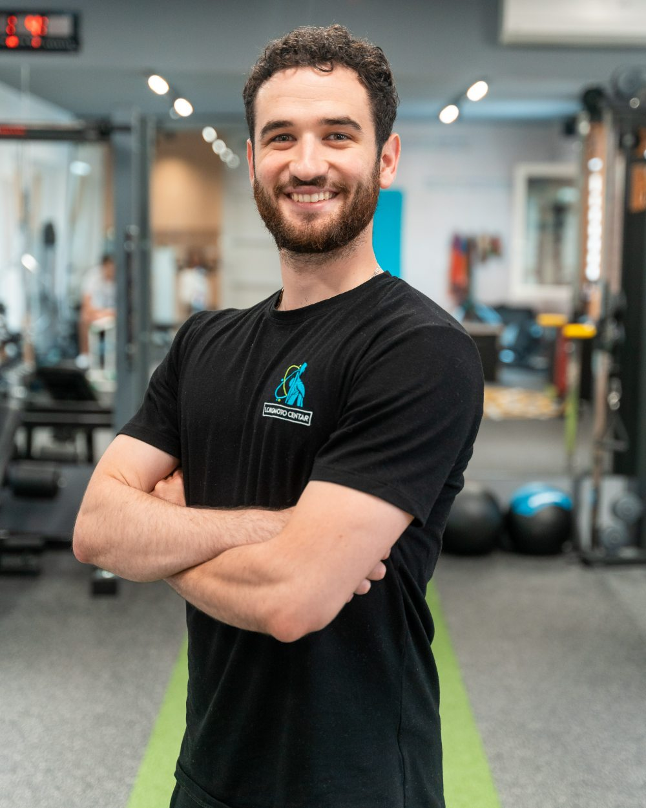
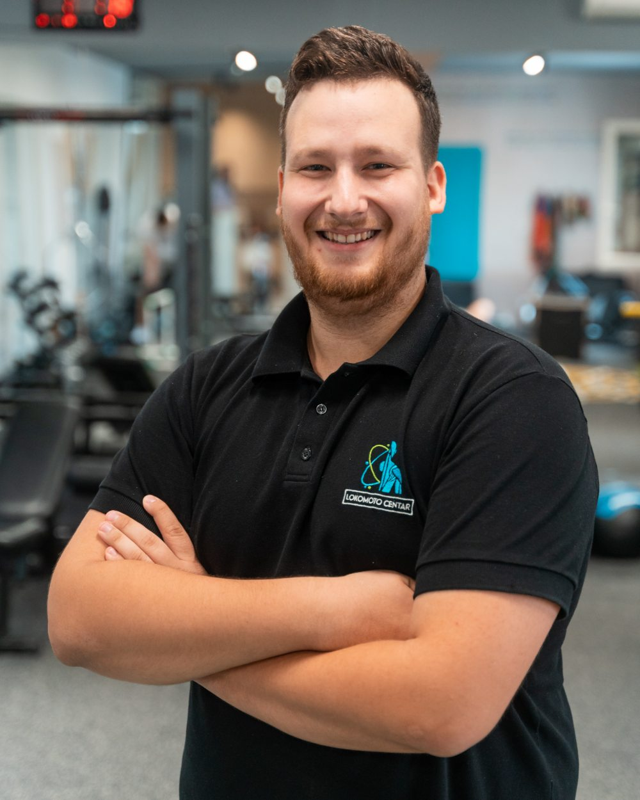
Odlaziš sa sistemom koji primenjuješ već od ponedeljka.
Biopsihosocijalni pristup, pokret kao naučeno ponašanje, kapacitet i tolerancija tkiva.
Samo ono što se koristi u praksi.
Opterećenje kičme, pokreti po ravnima, lumbo-pelvični ritam, koji pokret opterećuje koju strukturu.
Crvene zastavice i pitanje kada je snimak potreban.
Testiranje uživo u parovima, izvođenje i tumačenje nalaza.
Zašto su vežbe samo alat.
Kako pacijenta bezbedno izvesti iz bolne faze.
Aktivna terapija i izbor vežbi na osnovu nalaza, ne po receptu.
Trake, bučice, šipka, hex bar, kablovi, pliometrija.
Rad u grupama, od procene do otpusta.
Razlika je ista kao između nekoga ko ima recept i nekoga ko ume da kuva. Recept radi dok imaš baš te sastojke.
Za svaku odluku postoji kriterijum. Kada preći fazu, kada dodati opterećenje, kada je pacijent gotov.
Ako pacijent izađe samo opušteniji, a nije naučio da pokreće telo drugačije - kupio si mu vreme, nisi rešio problem.
Od prvog kontakta do povratka u teretanu ili na posao - uključujući prelaz iz kliničke rehabilitacije u pravi trening sa tegovima.
Rad u parovima, uz korekciju predavača. Ne gledaš kako se radi - radiš.
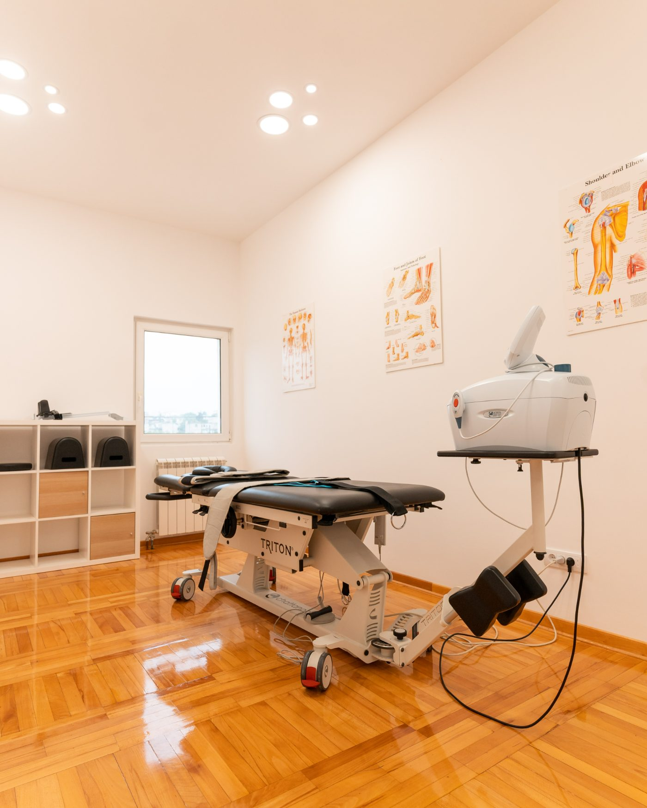
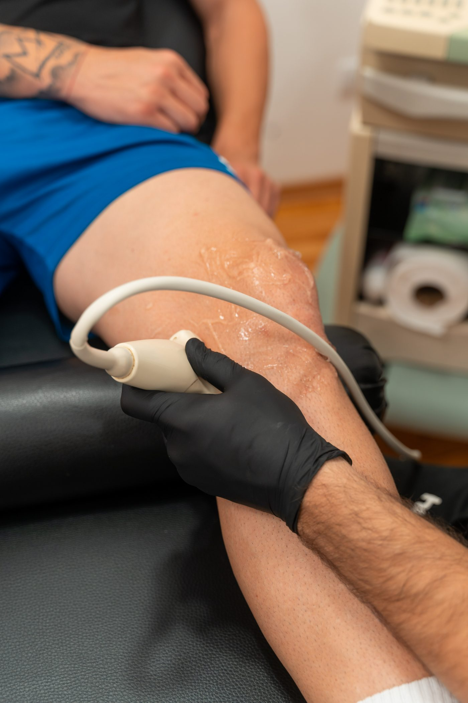
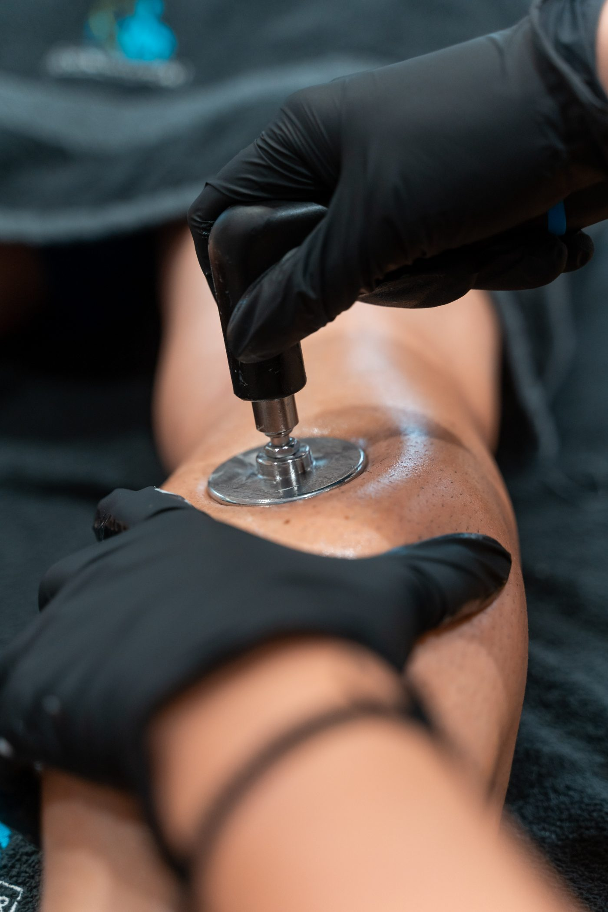
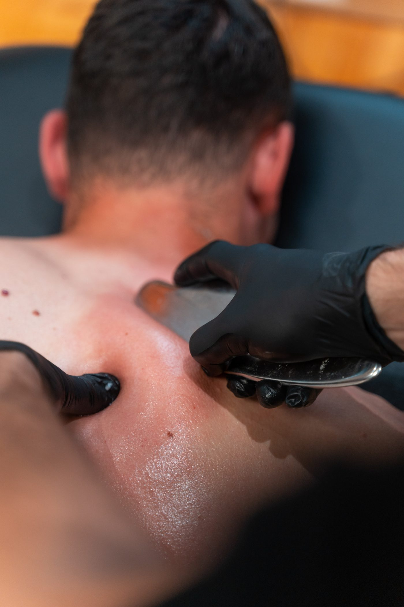
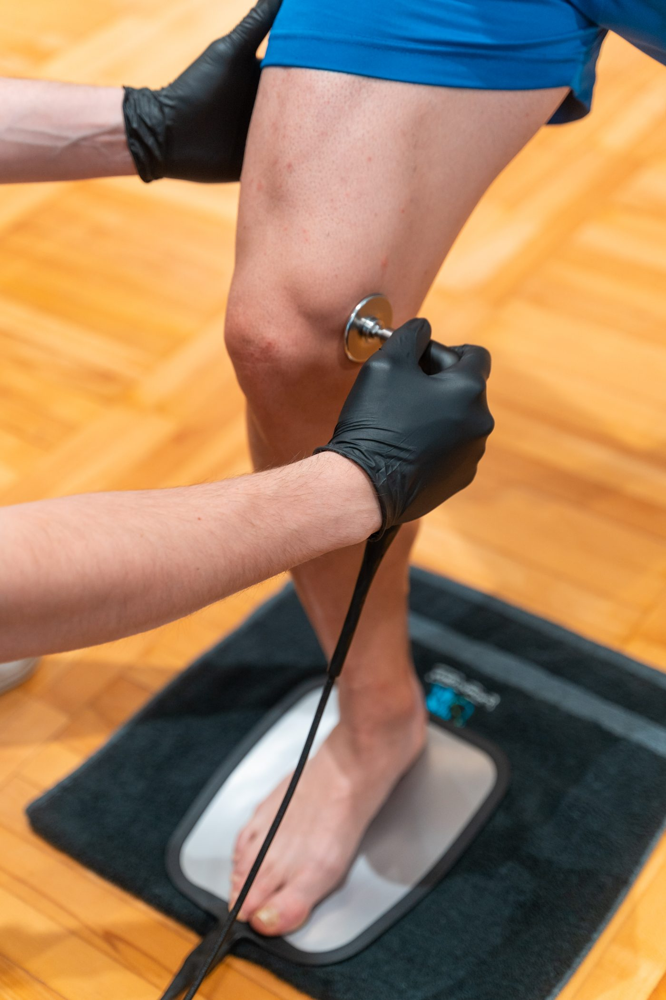
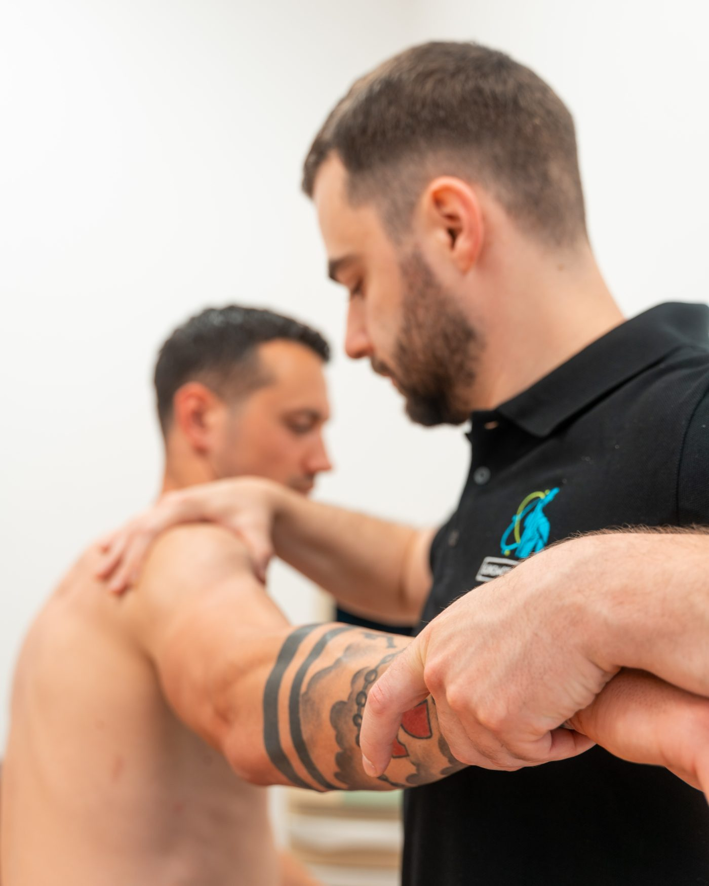
„Nisam dobio nove tehnike - dobio sam redosled. Prvi put posle kursa tačno znam zašto biram baš tu vežbu."
„Kriterijumi za prelaz faze su mi sredili rad sa sportistima. Više ne nagađam kada je neko spreman za opterećenje."
„Praktični deo je ono što fali svuda. Testove smo radili svojim rukama, uz korekciju - ne sa slajda."
Grupa je ograničena na 20 polaznika jer se svi testovi izvode u parovima, uz korekciju. Polaznici dobijaju potvrdu o prisustvu; edukacija nije akreditovana i ne nosi bodove.
Puna refundacija do 30.09.2026. Nakon tog datuma uplata se ne refundira.
Dva dana. Dvadeset ljudi. Sistem koji primenjuješ već od ponedeljka.